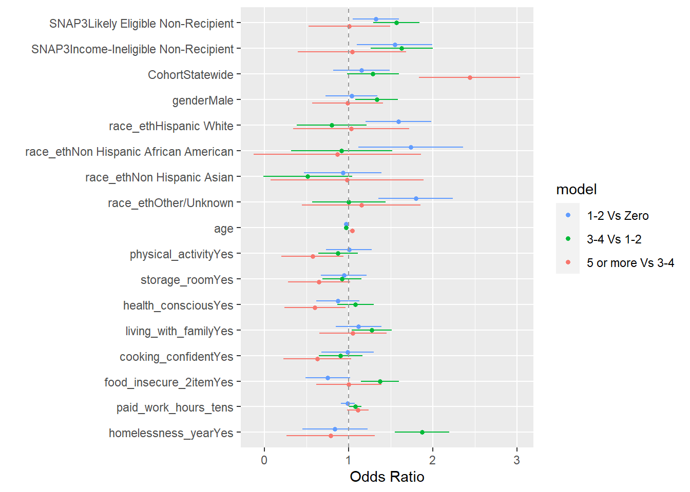
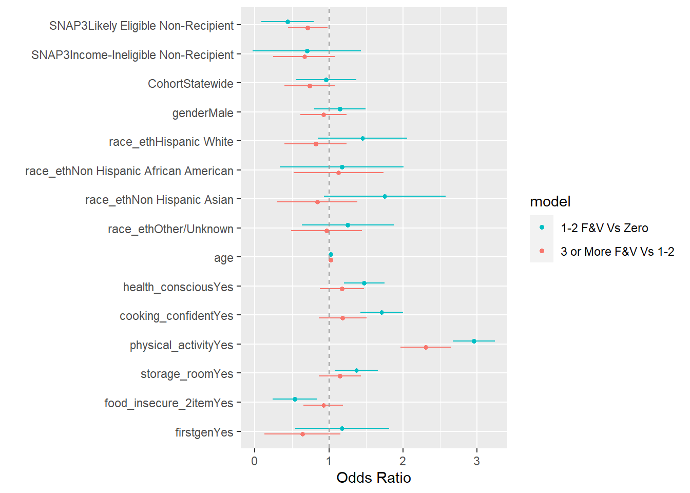

This page shows all procedures used to choose the best fitting model. The BIC and AIC of a Poisson, linear, log transformation, and an ordinal regression model were compared. The ordinal regression models fit the best and had the lowest AICs and BICs. To ensure that there were no major differences in results across the different levels of the dependent variables, stratified logistic regressions were fitted and compared. All results appeared to stay consistent across the different levels, justifying the use of an ordinal regression model.
ordinal.mod1 <-glm(ff_cat1~SNAP3 + Cohort + gender + race_eth + age + physical_activity + storage_room + health_conscious + living_with_family + cooking_confident + food_insecure_2item + paid_work_hours_tens + homelessness_year, data = bns_combined_imputed_df, family ="binomial")ordinal.mod2 <-glm(ff_cat2~SNAP3 + Cohort + gender + race_eth + age + physical_activity + storage_room + health_conscious + living_with_family + cooking_confident + food_insecure_2item + paid_work_hours_tens + homelessness_year, data = bns_combined_imputed_df, family ="binomial")ordinal.mod3 <-glm(ff_cat3~SNAP3 + Cohort + gender + race_eth + age + physical_activity + storage_room + health_conscious + living_with_family + cooking_confident + food_insecure_2item + paid_work_hours_tens + homelessness_year, data = bns_combined_imputed_df, family ="binomial")ordinal.mod1 <-tidy(ordinal.mod1) %>%mutate(model ="1-2 Vs Zero",estimate =exp(estimate))ordinal.mod2 <-tidy(ordinal.mod2) %>%mutate(model ="3-4 Vs 1-2",estimate =exp(estimate))ordinal.mod3 <-tidy(ordinal.mod3) %>%mutate(model ="5 or more Vs 3-4",estimate =exp(estimate))models <-bind_rows(ordinal.mod1, ordinal.mod2, ordinal.mod3)dwplot(models) +geom_vline(xintercept =1,colour ="grey60",linetype =2) +xlab("Odds Ratio")

In almost all variables, confidence intervals overlapped between stratified models and estimates were similar, meaning there were no major differences between levels and an ordinal regression is appropriate.
cat("AIC for Log Transformation Model:", AIC(log.model))
AIC for Log Transformation Model: 9556.535
Show the code
cat("AIC for Ordinal Model:", AIC(ordinal.mod))
AIC for Ordinal Model: 5226.873
Show the code
cat("BIC for Poisson Model:", BIC(poisson.model))
BIC for Poisson Model: 7537.64
Show the code
cat("BIC for Linear Model:", BIC(linear.model))
BIC for Linear Model: 8199.983
Show the code
cat("BIC for Log Transformation Model:", BIC(log.model))
BIC for Log Transformation Model: 9666.113
Show the code
cat("BIC for Ordinal Model:", BIC(ordinal.mod))
BIC for Ordinal Model: 5342.218
Although AIC and BIC are computed differently between model types, the ordinal model had far lower values, justifying the use of an ordinal regression
Model Accuracy
Show the code
ff.ordinal.mod2 <- MASS::polr(ff_cat~SNAP3 + Cohort + gender + race_eth + age + physical_activity + storage_room + health_conscious + living_with_family + cooking_confident + food_insecure_2item + paid_work_hours_tens + homelessness_year, data = bns_combined_imputed_df, Hess=TRUE)preds_ff <-augment(ff.ordinal.mod2, type ="class")conf_mat(preds_ff, truth = ff_cat, estimate = .fitted)
Truth
Prediction Zero 1-2 times per week 3-4 times per week
Zero 10 5 0
1-2 times per week 343 1310 506
3-4 times per week 0 1 2
5 or more times per week 0 0 0
Truth
Prediction 5 or more times per week
Zero 0
1-2 times per week 185
3-4 times per week 0
5 or more times per week 0
Show the code
accuracy(preds_ff, truth = ff_cat, estimate = .fitted)
There were no variables that were highly colinear.
Stratified Logistic Reg
Show the code
ordinal.mod1 <-glm(ssb_cat1~SNAP3 + Cohort + race_eth + gender + age + units_four + unpaid_work_hours_tens + paid_work_hours_tens + caregiving_hours_tens + health_conscious + storage_access + physical_activity + homelessness_year, data = bns_combined_imputed_df, family ="binomial")ordinal.mod2 <-glm(ssb_cat2~SNAP3 + Cohort + race_eth + gender + age + units_four + unpaid_work_hours_tens + paid_work_hours_tens + caregiving_hours_tens + health_conscious + storage_access + physical_activity + homelessness_year, data = bns_combined_imputed_df, family ="binomial")ordinal.mod3 <-glm(ssb_cat3~SNAP3 + Cohort + race_eth + gender + age + units_four + unpaid_work_hours_tens + paid_work_hours_tens + caregiving_hours_tens + health_conscious + storage_access + physical_activity + homelessness_year, data = bns_combined_imputed_df, family ="binomial")ordinal.mod1 <-tidy(ordinal.mod1) %>%mutate(model ="1-8 ounces Vs Zero",estimate =exp(estimate))ordinal.mod2 <-tidy(ordinal.mod2) %>%mutate(model ="9-16 ounces Vs 1-8",estimate =exp(estimate))ordinal.mod3 <-tidy(ordinal.mod3) %>%mutate(model ="17 or more ounces Vs 9-16",estimate =exp(estimate))models <-bind_rows(ordinal.mod1, ordinal.mod2, ordinal.mod3)dwplot(models) +geom_vline(xintercept =1,colour ="grey60",linetype =2) +xlab("Odds Ratio")
In almost all variables, confidence intervals overlapped between stratified models and estimates were similar, meaning there were no major differences between levels and an ordinal regression is appropriate.
There were no variables that were highly colinear.
Stratified Logistic Regressions
Show the code
imp_one_vs_zero <-with(bns_imputed_mids, glm(q77_one_vs_zero~SNAP3 + Cohort + gender + race_eth + age + health_conscious + cooking_confident + physical_activity + storage_room + food_insecure_2item + firstgen, family ="binomial"))imp_one_vs_three_or_more <-with(bns_imputed_mids, glm(q77_one_vs_three_or_more~SNAP3 + Cohort + gender + race_eth + age + health_conscious + cooking_confident + physical_activity + storage_room + food_insecure_2item + firstgen, family ="binomial"))imp_fv1_model_tidy <-pool(imp_one_vs_zero) |>summary() %>%mutate(model ="1-2 F&V Vs Zero",estimate =exp(estimate)) %>%select(-df)imp_fv2_model_tidy <-pool(imp_one_vs_three_or_more) |>summary() %>%mutate(model ="3 or More F&V Vs 1-2",estimate =exp(estimate)) %>%select(-df)FV2_models <-bind_rows(imp_fv1_model_tidy, imp_fv2_model_tidy)dwplot(FV2_models) +geom_vline(xintercept =1,colour ="grey60",linetype =2) +xlab("Odds Ratio")

In almost all variables, confidence intervals overlapped between stratified models and estimates were similar, meaning there were no major differences between levels and an ordinal regression is appropriate.